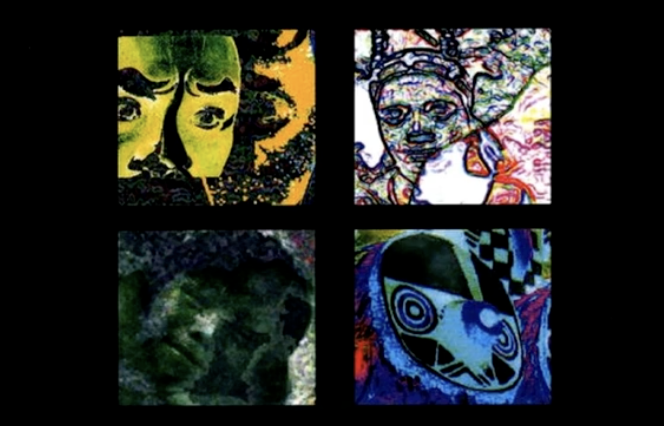

A personal archive for my studies, projects, writings, and other ongoing work across physics, mathematics, art, and aesthetics!
1. Mainly interested in theoretical particle physics (particularly quantum field theory and beyond standard model) and formal science including logic, mathematics.
2. Outside academics, working with electronic and electroacoustic music under the name Ploique Cyx, and abstract hip hop music under the name Equidist Neon (1/2 of VerEffekt). Also interested in experimental film and abstract art.

구체음악 및 음향음악 아티스트
Pierre Schaeffer
Pierre Henry
Luc Ferrari
Bernard Parmegiani
Henri Pousseur
Alvin Curran
현대클래식 아티스트
Karlheinz Stockhausen
Edgard Varèse
Giacinto Scelsi
Alfred Schnittke
Luigi Nono
Olivier Messiaen
재즈 아티스트
John Coltrane
Ornette Coleman
힙합 아티스트
Company Flow
Ultramagnetic MC's
테크노 아티스트
Basic Channel
Porter Ricks
블루스 아티스트
Blind Willie Johnson
Washington Phillips
영화감독
Andrei Tarkovsky
Stan Brakhage
Ingmar Bergman
화가
Wassily Kandinsky
Kazimir Malevich
Gerhard Richter
물리학자
Paul Dirac
Werner Heisenberg
Richard Feynman
수학자
John von Neumann
David Hilbert
Hermann Weyl